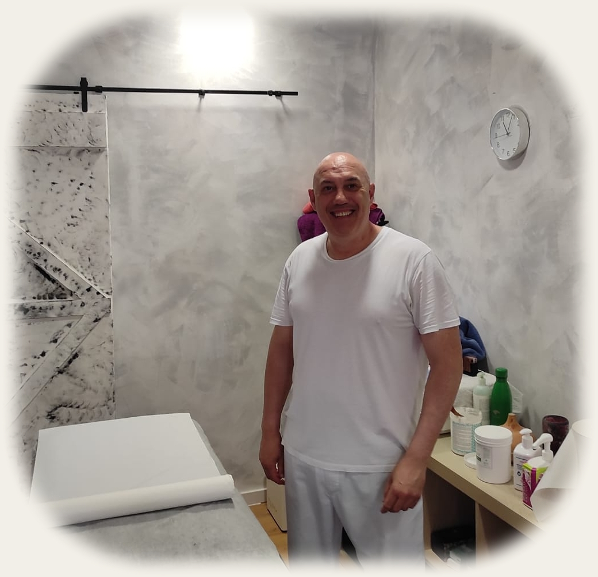

Más de 15 años de experiencia profesional, dedicación y seguimiento de resultados.

¿Sientes tensión acumulada, estrés o dolores musculares? ¡No esperes más para cuidarte! Como quiromasajista profesional, mi objetivo es ayudarte a recuperar el equilibrio físico y mental mediante masajes que alivian, relajan y revitalizan tu cuerpo.
✅ Alivio del dolor: Trato contracturas, sobrecargas y molestias musculares con técnicas adaptadas a tus necesidades.
✅ Reducción del estrés: Sesiones relajantes que liberan tensiones y promueven una profunda sensación de calma.
✅ Mejora de la movilidad: Trabajo para flexibilizar tus articulaciones y mejorar la postura.
✅ Masajes personalizados: Desde terapéuticos hasta descontracturantes, cada sesión se ajusta a ti.